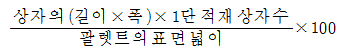
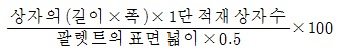
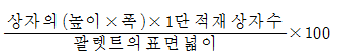
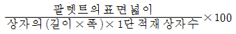
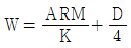
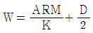
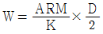
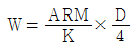

포장기사 (2005-05-29 기출문제)
1과목: 포장일반
1. 포장 표준화를 추진하는 기업에서 일관 팔렛트화 시스템을 도입 할 경우 기업측면에서의 장점과 가장 거리가 먼 내용은?
- 회사전체의 물류효율화 향상
- 물류 및 포장원가 절감
- 타시스템과의 공조 및 유기적 정보교환
- 포장화물 도난 방지
(정답률: 알수없음)

2. 실제 안전계수의 산출방법 중 가장 적절한 절차를 설명한 것은?
- 이론 안전계수를 기준으로 물품의 특징과 형태를 반영하고 유통경로를 분석하여 이론 안전계수를 보정하여 정한다.
- 물품의 특징과 형태를 기준으로 유통경로를 분석하여 실제 안전계수를 정한다.
- 이론 안전계수에 유통경로를 분석하고, 더하여 실제 안전계수를 정한다.
- 이론 안전계수를 기준으로 유통경로를 분석하여 이론 안전계수를 보정하고 그값에 여유치 25%를 더하여 실제 안전계수로 정한다.
(정답률: 알수없음)
3. 환경 개선을 위해 펄프 표백시 염소를 대체하는 표백약품에 속하지 않는 것은?
- 이산화염소
- 산소
- 질소
- 과산화수소
(정답률: 알수없음)
4. 사진이나 바탕인쇄를 지면 전체에 꽉 차도록 레이아웃(3∼5mm정도 크게)하는 것을 일컫는 용어는?
- 블리드
- 드론워크
- 그라데이션
- 마블링
(정답률: 알수없음)
5. 색의 3속성 중 무채색이 가지고 있는 요소는?
- 색상
- 명도
- 채도
- 색환
(정답률: 알수없음)
6. 포장 내용물의 중량에 의한 분류 중 가장 올바른 것은?
- 경포장: 내용물 중량이 25kg 미만
- 경포장: 내용물 중량이 10kg 미만
- 중(中)포장: 내용물의 중량이 50~200kg
- 중(重)포장: 내용물 중량이 100kg을 초과
(정답률: 알수없음)
7. 화물운송회사의 심벌마크를 디자인하고자 할 때 이 회사와 어울리는 캐릭터(character)를 갖추어야 한다.다음 중에서 가장 관계가 먼 심벌마크의 이미지는?
- 스피드
- 쾌적함
- 안전성
- 신뢰성
(정답률: 알수없음)
8. 정제용 계수기 중 광전관 방식에서 정제 검출에 주의해야 할 점이 아닌 것은?
- 정제가 겹쳐져도 검출이 확실할 것
- 사이즈 변경이 간단할 것
- 분진 등에 의한 오판정이 없을 것
- 계수가 확실할 것
(정답률: 알수없음)
9. 포장기계의 신뢰성 설계 중 신뢰도가 가장 높은 경우는?
- 직렬
- 병렬
- 대기
- 지체
(정답률: 알수없음)
10. 병 충진라인에 대한 설명 중에서 가장 관계가 먼 내용은?
- 충진기의 능력은 보통능력보다 5∼10% 낮게 운전된다
- 전.후 기계능력의 4∼7%의 여유를 갖도록 배치한다.
- 광전관, 근접스위치, 타이머를 설치하여 병의 공급을 자동제어한다.
- 레이아웃은 공간 활용을 위해 회전식, 다단식으로 설치한다.
(정답률: 알수없음)
11. 포장은 시각을 통해서 소비자의 시선을 집중시키게 된다. 이러한 소비자의 시선을 끌고 관심을 불러일으키는 요소와 가장 관계가 먼 것은?
- 대량진열시 디스플레이 효과는 관계 없다.
- 사용방법의 설명이 시각적으로 정리되어야 한다.
- 내용상품이 무엇인지 인지할 수 있어야 한다.
- 그래픽은 아름다워야 한다.
(정답률: 알수없음)
12. 골판지 상자의 압축강도에 의한 강도표준화를 실시하고자 할 때 다음 중 영향을 미치지 않는 요인은?
- 포장화물 1개의 무게
- 적재 총 높이
- 골판지 상자의 높이
- 골판지 상자의 폭
(정답률: 알수없음)
13. 카본티슈에 감광성을 부여시 주의하여야 할 점으로 가장 거리가 먼 것은?
- 중크롬산칼륨의 용액이 적당하다.
- PH는 5∼6으로 약산성이 좋다.
- 산성도의 조정은 암모니아를 사용하는 것이 좋다.
- 산성도가 높으면 감광도가 낮고 콘트라스트가 높아지므로 주의한다.
(정답률: 알수없음)
14. 금속용기인 주석 캔에서 위생상 문제가 될 가능성이 있는 물질로 가장 거리가 먼 것은?
- 납
- 철
- 주석
- 구리
(정답률: 알수없음)
15. 포장디자인의 목적과 기능 중 제품보호기능이 아닌 것은?
- 식별성
- 작업성
- 수송적성
- 안전성
(정답률: 알수없음)
16. 포장 표준치수는 다음 중 어떤 점을 가장 중요한 근거로 하여 규정 되었는가?
- 수송차량 및 용기의 내용적(內容積)의 활용
- 화물운송시의 편리함
- 내용물의 부피
- 운반비용의 절감
(정답률: 알수없음)
17. 평판으로 인쇄하는 방식은?
- 글자압력 인쇄
- 옵셋트 인쇄
- 그라비어 인쇄
- 플렉소 인쇄
(정답률: 알수없음)
18. 적정포장에서 만족시켜야 할 사항으로 가장 거리가 먼 것은?
- 유통과정 중의 내용물 보호
- 상품의 계량단위가 유통과정에 적합한지의 여부
- 상품의 식별, 표시, 사용방법의 적절성
- 판매촉진을 위한 미적효율의 적정성
(정답률: 알수없음)
19. 면적이 같을 때 가장 작아 보이는 색채는?
- 흰색
- 노랑
- 빨강
- 군청색
(정답률: 알수없음)
20. 알루미늄의 재활용에 대한 설명 중에서 가장 관계가 먼 내용은?
- 알루미늄은 중량으로는 폐기물 중에서 차지하는 비중이 작지만 가장 값비싼 재료 중 하나이다.
- 알루미늄 포장에 있어서 재활용은 음료 캔에 집중되고 있는 편이다.
- 식음료와 직접 접촉되는 경우 재활용된 알루미늄은 절대 사용되어서는 안된다.
- 알루미늄 캔은 산화에 대해 저항성이 있고 매우 느리게 붕괴된다.
(정답률: 알수없음)
2과목: 물류관리
21. 랙의 종류 중 경사되어 있는 랙 시스템을 무엇이라 하는가?
- 팔렛트랙
- 이동랙
- 유동랙
- 적층랙
(정답률: 알수없음)
22. 신 물류시스템의 종류와 가장 거리가 먼 것은?
- QR
- ECR
- ERP
- TQC
(정답률: 알수없음)
23. 바-코드에서 제조 또는 판매업체가 자사상품에 부여하는 코드는?
- 제조업체 코드
- 체크 디지트
- 국가식별 코드
- 상품품목 코드
(정답률: 알수없음)
24. 컨테이너 물동량의 산출을 위한 국제적인 표준단위인 TEU의 크기는?
- 20foot
- 40foot
- 45foot
- 50foot
(정답률: 알수없음)
25. 유닛 로드 시스템(Unit Load System)을 적용하므로써 항상 얻을 수 있는 장점이라고 볼 수 없는 것은?
- 하역의 기계화 및 합리화
- 화물 파손방지
- 차량 회전율의 향상
- 포장비의 감소
(정답률: 알수없음)
26. 저장관리원칙 중 틀린 것은?
- 선입선출의 원칙
- 공간활용의 원칙
- 품질보존의 원칙
- 모듐화의 원칙
(정답률: 알수없음)
27. 기업의 물류활동 중요성과 가장 관계가 먼 것은?
- 고객 서비스 향상증대
- 물류 cost 절감필요
- 생산원가의 절감
- 고객욕구의 다양화
(정답률: 알수없음)
28. 다음 시장조사기법 중 출시를 앞둔 신제품에 대한 최종적인 소비자반응을 조사하기 위한 것으로 가장 적당한 것은?
- HUT 조사
- CLT 조사
- FGI 조사
- 테스트 마켓
(정답률: 알수없음)
29. 상표전략에 대한 설명으로 관계가 가장 먼 것은?
- 크게 공동상표, 개별상표, 혼합상표전략으로 나눌 수 있다.
- 공동상표전략은 많은 브랜드를 대상으로 마케팅 활동을 전개하여 비용이 많이 드는 단점이 있다.
- 개별상표는 특유한 이미지를 구축할 수 있어 차별화에 유리하다.
- 혼합상표는 공동상표와 개별상표전략의 중간형태이다.
(정답률: 알수없음)
30. 보관을 설명한 내용으로 가장 올바른 것은?
- 물품을 저장해 두는 것을 말한다.
- 재화를 물류적으로 보존하고 관리하는 것이다.
- 재화를 훼손하지 않고 안전하게 관리하는 것을 말한다.
- 재화를 안전하게 보존하는 것이다.
(정답률: 알수없음)
31. D 자동차 회사는 상류층과 중류층에 대해 각기 다른 종류의 자동차를 개발하여 판매하였다. 이와 가장 관계 깊은 마케팅 전략은?
- 시장 세분화(segmentation)
- 표적시장(target market) 선택
- 위치정립(positioning)
- 군집분석(cluster analysis)
(정답률: 알수없음)
32. 물류 기본형태의 3개 요소로 가장 올바른 것은?
- 노드(NODE), 링크(LINK), 타임(TIME)
- 노드(NODE), 마케트(MARKET), 링크(LINK)
- 노드(NODE), 링크(LINK), 존(ZONE)
- 링크(LINK), 노드(NODE), 스페이스(SPACE)
(정답률: 알수없음)
33. 유통과정에 있어 포장강도에 영향을 주는 하역,수송,보관의 정도에 따라 유통조건은 4종류의 등급으로 구분한다. 수송거리가 길고 환적횟수가 많으며, 거친하역의 우려가 있는 경우에는 몇 등급에 해당되는가?
- 등급Ⅰ
- 등급Ⅱ
- 등급Ⅲ
- 등급Ⅳ
(정답률: 알수없음)
34. Node란 무엇인가?
- 상호중계기지
- 운송수단의 통로
- SOC
- Depot
(정답률: 알수없음)
35. 해상운송의 종류 중 정기선 운송의 특징을 설명한 내용 중 가장 거리가 먼 것은?
- 운임은 하역비까지 포함되어 있어 부정기선에 비해 낮다.
- 화주가 다수이며, 운송대상도 종류가 많다.
- 개별선사에 의한 수요의 독점이 불가능하다.
- 선박회사의 배선표와 매매계약서 및 신용장의 약정, 선적기한과 수요량이 비교적 안정적이다.
(정답률: 알수없음)
36. 상점내 POS 터미널을 통제하는 미니 컴퓨터로 경영정보를 수집하고 각종 보고서를 발행하여 본부에 모든 정보를 전송하는 역할을 담당하는 것은?
- POS 터미널
- 본부 단말기
- 본부 주 컴퓨터
- 스토아 컨트롤러
(정답률: 알수없음)
37. 철도와 트럭의 병용방식(竝用方式)을 무엇이라 하는가?
- airtrucks
- piggyback
- fishyback
- trainships
(정답률: 알수없음)
38. 다음 중 마케팅 전략의 구성요소에 대한 진행상황은?
- 시장세분화 - 목표포지션의 선정 - 표적시장의 선정 - 마케팅믹스의 구성
- 시장세분화 - 표적시장의 선정 - 목표포지션의 선정 - 마케팅믹스의 구성
- 시장세분화 - 마케팅믹스의 구성 - 표적시장의 선정 - 목표포지션의 선정
- 시장세분화 - 마케팅믹스의 구성 - 목표포지션의 선정 - 표적시장의 선정
(정답률: 알수없음)
39. 팔렛트의 표면 이용율 공식으로 맞는 것은?




(정답률: 알수없음)
40. ISO에서 채택되고 있는 팔렛트 규격은 4종류가 있다. 가장 올바른 것은?(단, 단위는 mm이다)
- 1200×800, 1200×1000, 1165×1165, 1140×1140
- 1200×800, 1200×1000, 1140×1140, 1219×1016
- 1200×800, 1100×900, 1140×1140, 1200×900
- 1200×800, 1200×1000, 1140×1140, 1200×1200
(정답률: 알수없음)
3과목: 포장재료
41. 테이프 종류 중 접착성 테이프를 지칭하는 것은?
- Gummed tape
- PSA tape
- 감압테이프
- Masking tape
(정답률: 알수없음)
42. 다음 중에서 투습도가 가장 높은 포장재는 어느 것인가?
- LDPE
- HDPE
- PET
- PVC
(정답률: 알수없음)
43. 골판지의 골의 형태 중에서 수직압축강도가 가장 좋은 것은?
- A골
- B골
- C골
- E골
(정답률: 알수없음)
44. 골판지 원단(시이트)을 용해한 왁스에 넣어 함침시킨 골판지상자의 특색으로 가장 거리가 먼 것은?
- 쉽게 미끄러진다.
- 왁스가공을 했기 때문에 일반상자보다 강도가 우수하다.
- 생산성이 낮다.
- 왁스의 함침량은 90% 전후이다.
(정답률: 알수없음)
45. 목재용기에 대한 설명 내용으로 가장 관계가 먼 것은?
- 나무상자의 바깥판에 따라 A, B, C형으로 나눈다.
- A형과 B형은 내용물의 방수보호 등이 필요하다.
- 요하를 부착한 상자는 내용물의 무게가 무거운 용도로 쓰인다.
- 목재의 함수율은 원칙적으로 20% 이하로 하지만 바깥 덧대기의 경우는 24% 이하도 가능하다.
(정답률: 알수없음)
46. 다음 중 설명이 잘못된 것은?
- GPPS - 불투명 폴리스틸렌
- EPS - 발포 폴리스틸렌
- HIPS - 내충격 폴리스틸렌
- PSP - 폴리스틸렌 페이퍼
(정답률: 알수없음)
47. 유리병 제조시 유리원료로서 제일 많이 사용되는 재료는 다음 중 어느 것인가 ?
- B2O3
- Al2O3
- CaO
- SiO2
(정답률: 알수없음)
48. 개구성과 인장강도가 좋아 간이 쇼핑백 재질로 가장 적합한 플라스틱 필름은?
- PP
- LDPE
- HDPE
- PET
(정답률: 알수없음)
49. 알루미늄 박에 대한 설명 내용으로 가장 관계가 먼 것은?
- 무해무독하고 위생적이다.
- 다른 필름과의 접합가공이 용이하다.
- 폴리에틸렌을 코팅해서 정제약품의 포장에 사용한다.
- 두께가 얇으면 얇을 수록 핀홀의 수가 적다.
(정답률: 알수없음)
50. 포장재료로 사용되는 셀로판의 성질이 아닌 것은?
- 광택 및 투명성이 좋다.
- 인쇄적성이 우수하다.
- PT셀로판의 경우 방습성이 우수하다.
- 내유성, 내약품성이 좋다.
(정답률: 알수없음)
51. 종이의 평량 단위는?
- g
- g/m
- g/m2
- g/m3
(정답률: 알수없음)
52. 고밀도 폴리에틸렌 필름이 저밀도 폴리에틸렌 필름보다 우수한 것으로 가장 올바른 것은?
- 개구성이 좋다. 기계적 강도가 크다. 내열성이 좋다. 가로세로 방향의 강도차가 적다.
- 기계적 강도가 크다. 내열성이 좋다. 방습성이 좋다. 투명도가 좋다.
- 내열성이 좋다. 내유성이 좋다. 내약품성이 좋다. 기계적 강도가 크다.
- 내열성이 좋다. 가로세로 방향의 강도차가 적다. 내유성이 좋다. 투명성이 좋다.
(정답률: 알수없음)
53. 용기내에서 진공을 유지시켜 주는 마개류의 종류가 아닌 것은?
- lug cap
- press-on twist-off cap
- screw cap
- pry-off cap
(정답률: 알수없음)
54. 다음 중 폴리스틸렌(Polystyrene)에 대한 설명 내용으로 가장 거리가 먼 것은?
- 일반용 폴리스틸렌을 GPPS이라고 약칭하여 불린다.
- OPS는 폴리스틸렌을 이축연신한 것으로 라벨용으로 종종 쓰인다.
- EPS는 폴리스틸렌에 발포제를 배합,발포성형한 것이다.
- PSP는 내충격폴리스틸렌으로 내충격에 약한 결점을 보완한 것이다.
(정답률: 알수없음)
55. 플라스틱 마개의 특징으로 가장 거리가 먼 것은?
- 열접착에 의하여 밀봉할 수 없다.
- Screw cap과 같은 것은 헐거워지기 쉽다.
- 금속마개와 같이 2차 가공을 할 수가 없다.
- 내용물에 따라 알맞은 재료를 선정하지 않으면 파손, 오손되는 경우가 있다.
(정답률: 알수없음)
56. 과자 및 식품포장용 판지로 많이 사용되고 있으며,표면층에는 표백 화학펄프를 사용하고, 이면층에는 재생고지를 사용하는 판지는?
- Ivory지
- CCP지
- SC-Manilla지
- 로얄 Ivory지
(정답률: 알수없음)
57. 금속포장용기에 대한 설명으로 틀린 것은?
- TFS란 주석을 사용하지 않아 납땜성이 없어 크롬도금을 벗겨 권체한다.
- 3 piece 캔의 용기본체와 바닥부분 및 뚜껑 사이의 밀봉은 이중권체에 의해 이루어진다.
- 높은 기계적 강도로 맥주나 탄산음료 등 내압이 요구되는 용기에 적합하다.
- TFS는 강판에 크롬 도금한 것으로 녹은 잘 슬지 않으나 가격이 주석판에 비해 비싸다.
(정답률: 알수없음)
58. 섬유포장용 필름으로 많이 사용되고, 수용성 필름으로 최근 환경문제와 관련하여 각광받고 있는 필름으로 가장 올바른 것은?
- PVA
- EVOH
- m-LLDPE
- IONOMER
(정답률: 알수없음)
59. 왕관(crown cork)의 성질(사용특성)에 의한 분류 항목이 아닌 것은?
- 내압용
- 내열용
- 감압용
- 상압용
(정답률: 알수없음)
60. 골판지상자의 장점과 거리가 먼 것은?
- 가스차단성이 좋다.
- 자원의 재생 및 재이용이 용이하다.
- 완충성이 있다.
- 단열효과가 있다.
(정답률: 알수없음)
4과목: 포장기법
61. 방청포장을 할 철금형 제품이 있다. 이 제품에 묻어있는 알카리녹을 제거하는 방법으로 가장 적합한 것은?
- 산 수용액속에 침지 시킨다.
- 뜨거운물로 씻고 세척제로 닦는다.
- 유제 크리너 수용액에 금형을 침적시킨다.
- 알카리 및 킬레이트화제를 가한 수용액에 침지시킨다
(정답률: 알수없음)
62. 이중권체에서 실링 컴파운드(Sealing compound)의 가장 중요한 역할은?
- 밀봉력의 향상
- 녹슬음의 방지
- 플렌지와 컬의 이중권체를 도와주는 역할
- 이중권체의 물리적 강도를 높이는 역할
(정답률: 알수없음)
63. 식품의 갈변현상과 가장 관계가 먼 것은?
- 메일라드 반응
- 카라멜 반응
- 폴리페놀옥시다제
- 아밀라제 분해효소
(정답률: 알수없음)
64. 제품을 분해하여 부품을 포장하는 방식의 용어는?
- Knock down포장
- Blocking포장
- Skid Base포장
- Sleeper포장
(정답률: 알수없음)
65. 이중양면골판지(DW)상자를 제작할 때 완충성만 고려한다면 어떻게 골을 구성하는 것이 제일 우수한가?
- A골 + B골
- A골 + C골
- B골 + C골
- B골 + B골
(정답률: 알수없음)
66. 골판지 상자의 S자 휨 원인과 가장 거리가 먼 것은?
- 두루마리 라이너의 폭방향 수분 불균일
- 두루마리 라이너의 양끝 부분의 수분이 적다.
- 열판 온도의 불균일
- 열량, 평행도의 불균일
(정답률: 알수없음)
67. 레토르트 파우치 식품을 생산할 때 일반적으로 적용되는 살균온도는?
- 70℃
- 121℃
- 50℃
- 150℃
(정답률: 알수없음)
68. 알루미늄캔에 비탄산음료를 포장할 때 액화질소가스를 넣는 이유는 무엇인가?
- 내용물의 변질을 막기 위해서
- 알루미늄캔의 찌그러짐을 방지하기 위해서
- 내용물을 빨리 식히기 위해서
- 내용물의 부피를 늘리기 위해서
(정답률: 알수없음)
69. 분말제품을 플라스틱 필름을 이용하여 파우치포장을 하고 있는데 분말이 봉함부위에 달라붙어 파대가 일어나고 있다. 근본적인 대처방법은?
- 열봉함 온도를 높혀준다.
- 열봉함시 압력을 올려준다.
- 협잡물(이물질) 봉함성이 양호한 재질로 바꾼다.
- 낮은온도에서 열봉함이 가능한 구성으로 바꾸어준다.
(정답률: 알수없음)
70. 방습포장시 사용하는 상대습도에 대하여 가장 올바르게 표현한 것은?
- 대기중의 수증기의 분압 P'와 그 온도에 대한 포화 수증기압 P와의 비를 백분율로 표시한 것
- 대기중의 수증기의 함량 x와 그 온도에 대한 절대 습도량 y와의 비를 백분율로 표시한 것
- 대기중의 포화수증기압 P와 그 온도에 대한 수증기의 분압 P'와의 비를 백분율로 표시한 것
- 대기중의 절대습도량 y을 100으로 나누어 비율로 표시한 것
(정답률: 알수없음)
71. 다음 포장재료 중 재질구성과 사용예가 잘못 연결된 것은?
- ON/Al-foil/PP : 레토르트 포장
- Al-foil/PE/CPP : 전자렌지 조리용 포장
- PET/CPP : 비스켓 포장
- OPP/증착PET/CPP : 스낵류 포장
(정답률: 알수없음)
72. 완충 포장의 목적이 아닌 것은?
- 방습, 방청재료의 기능 보호
- 진동 충격 등의 완화
- 물품에 생기는 응력을 분산
- 곤충류 등의 침입을 방지
(정답률: 알수없음)
73. 플라스틱 필름의 열수축성을 이용하여 라벨 등에 사용되는 포장기법을 무엇이라 하는가?
- 스트레치포장(stretch)
- 쉐링크포장(shrink)
- 블리스터포장(blister)
- 스킨포장(skin)
(정답률: 알수없음)
74. 포장식품의 살균에서 미생물의 수가 사멸하여 1/10로 감소하는데 소요되는 시간을 나타내는 값은?
- D값
- Z값
- F값
- N값
(정답률: 알수없음)
75. 노즐식 가스충전법의 단점으로 가장 올바른 것은?
- 가스의 소모량이 적다.
- 가스치환율이 완전하지 않다.
- 가스 충전, 포장속도가 빠르다.
- 로터리식과 심교형 자동포장기가 있다.
(정답률: 알수없음)
76. 중량 15kg, 허용가속도 60G, 1면의 접촉면적이 400cm2인 제품을 발포 폴리스티렌으로 완충하고 싶다. 예상 낙하높이를 60cm로 가정했을 때 필요 두께(t)는 얼마인가? (단, 완충계수: 3.8)
- 1.5cm
- 2.7cm
- 3.8cm
- 4.5cm
(정답률: 알수없음)
77. 환경기체조절포장(MAP)에서 CO2에 관한 설명과 가장 거리가 먼 것은?
- 미생물의 유도기와 세대시간 증가효과가 있다.
- 호기성 미생물억제 농도는 20∼30%이다.
- 저온에서 생육억제효과는 크나 고온에서는 상대적으로 약하다.
- 신선육의 적색을 유지하여 준다.
(정답률: 알수없음)
78. 완충재료시험 중 정적완충시험의 결과 그래프를 이용하여 완충재 두께 산출과 관계 없는 그래프는?
- 완충계수-최대응력선도
- 최대응력-변위선도
- 완충계수-변위선도
- 가속도-최대응력선도
(정답률: 알수없음)
79. 방습포장 설계를 위하여 건조제 사용량을 구하는 식은? (단, W:소요 건조제 사용량[kg],A:포장 전표면적[m2], M:기간, R:포장재료의 투습도, K:상수, D:사용 완충재의 량[kg])




(정답률: 알수없음)
80. 보통 나무상자의 형식(KS A 2151 Ⅰ형)의 최대 내용물 중량은?
- 20kg 이하
- 150kg 이하
- 200kg 이하
- 300kg 이하
(정답률: 알수없음)
5과목: 포장시험 및 평가
81. 종이 및 판지의 흡수도 시험에 대한 다음 설명 중 틀린 것은?
- 콥법에서 흡수도 단위는 g/m2이다.
- 콥법의 경우 시험편과 물과의 접촉시간은 120초를 기준으로 한다.
- 클램법은 비흡수성 종이에 대해 적용한다.
- 클램법에서 시험결과는 1분간 또는 10분간 물의 흡수높이를 mm로 나타낸다.
(정답률: 알수없음)
82. 품질보증 시스템의 하나로서 검사의 역할 중 가장 거리가 먼 것은?
- 납기의 확보에 협력할 것
- 현장의 검사원의 신뢰성을 체크할 것
- 부적합품을 방지한다는 의미에서 검사는 항상 최종검사에서 이루어지도록 유도할 것
- 검사정보를 각 부분에 신속히 피드백 할 것
(정답률: 알수없음)
83. 팔렛트 적재 화물의 안전성 시험중 하역시험에 대한 내용 설명으로 가장 관계가 먼 것은?
- L자형 시험로
- 직선로에는 높이 2cm, 나비12cm의 턱
- 지게차 주행속도 1.5±0.3m/s
- 한 번 왕복
(정답률: 알수없음)
84. 통계도표를 작성하고자할 때 시계열, 즉 시간과 더불어 변화하는 수량의 상황을 나타내는데 가장 적합한 그래프는?
- 그림 그래프
- 꺽은선 그래프
- 막대 그래프
- 면적 그래프
(정답률: 알수없음)
85. 골판지가 유통 중 돌출부에 견디는 정도를 측정하는 동적 시험은 어떤 것인가?
- 파열강도
- 타공강도
- 아이죠드 충격강도
- 상자압축강도
(정답률: 알수없음)
86. 타공강도 시험(Puncture Test)에 있어서 시험결과 보고 내용과 가장 관계가 먼 것은?
- 측정시간치
- 총평균값
- 각 방향에 대한 평균, 최대 및 최소값
- 각 항향에 따른 시험횟수
(정답률: 알수없음)
87. 포장화물 및 용기의 진동시험에서 진동에 의한 손상에 포함되지 않는 것은?
- 내용물이 유출될 때
- 내용품이 깨어진 소리가 날 때
- 내용물에 손상이 발견되었을 때
- 예정한 변형이 일어났을 때
(정답률: 알수없음)
88. 무게가 2g인 시험편(종이)을 칭량병에 넣고 무게를 측정한 결과 건조 전의 무게가 53.4320g이었고 건조 후 무게가 53.2350g이었을 때, 이 시험편의 수분함량을 계산하면?
- 9.85%
- 9.75%
- 9.65%
- 9.55%
(정답률: 알수없음)
89. 시험편의 규격이 10㎝×10㎝ 인 종이의 무게를 측정하였더니 1.80⑤g이었다. 이때 평량은 얼마인가?
- 1.80⑤g/m2
- 18.0⑤g/m2
- 180.⑤g/m2
- 1800.5g/m2
(정답률: 알수없음)
90. 수직압축강도 시험에 대한 설명 내용으로 가장 올바른 것은?
- 시험편의 규격은 50 cm×100 cm이다.
- 골판지의 평면에 대하여 수직으로 압축한 값이다.
- 이중양면(DW)골판지의 경우 시험할 수 없다.
- 단위는 ㎏f/50 mm이다.
(정답률: 알수없음)
91. 포아송 분포와 관계되는 관리도는?
- P 관리도
- nP 관리도
- c 관리도
- xℓ-R 관리도
(정답률: 알수없음)
92. 방청유시험 중 비교적 강한 녹 방지 피막을 형성하는 방청유의 녹방지 성능을 단시간에 알아보기 위하여 행하는 시험은?
- 지문제거성시험
- 염수분무시험
- 취급방식성시험
- 포장격납시험
(정답률: 알수없음)
93. 소비자 위험을 가능한 한 적게하는 샘플링 방법은?
- 샘플의 크기 n을 크게 하든가, 합격판정 갯수 c를 적게 하면 좋다.
- 합격판정 갯수 c를 크게 한다.
- 샘플의 크기 n과 합격판정 갯수 c를 일정하게 하여야한다.
- 샘플의 크기 n과 합격판정 갯수 c를 크게 하여야한다.
(정답률: 알수없음)
94. 원칙적으로 로트 자체의 합격, 불합격을 결정하는 것으로 파는 쪽에 대한 보호와 사는 측에 대한 보호 두가지를 규정해서 파는 측과 사는 측의 요구를 만족하도록 짜여져 있는 샘플링 검사의 형태는?
- 축차 샘플링검사
- 다회 샘플링검사
- 규준형 샘플링검사
- 랜덤 샘플링검사
(정답률: 알수없음)
95. 원통형 수송용기의 낙하시험에서 공시품의 최소 수량은?
- 3개 이상
- 5개 이상
- 8개 이상
- 10개 이상
(정답률: 알수없음)
96. 시험기의 종류는 7형과 14형이 있으며, 포장화물 및 용기가 수송 도중에 받는 충격에 대한 적성을 비교하기 위한 시험방법은?
- 회전육각드럼 시험방법
- 경사충격 시험방법
- 낙하충격 시험방법
- 진동 시험방법
(정답률: 알수없음)
97. 다음 시료의 인장강도 시험결과는 20kg이었다. 이 시료의 열단장은 약 얼마인가? (단, 시료의 폭 15mm, 시료의 평량 250g/m2)
- 0.8 km
- 1.2 km
- 5.3 km
- 187.5 km
(정답률: 알수없음)
98. 골판지에서 핀 테스트(pin test)라고 하는 것은 어떤 특성을 조사하기 위한 시험인가?
- 압축강도
- 충격강도
- 접착강도
- 인장강도
(정답률: 알수없음)
99. 다음 중 플라스틱 필름류를 시험하는 시험기기로 가장 올바른 것은?
- 아이죠드 충격시험기
- 샤르피 충격시험기
- 낙구식(dart) 충격시험기
- 타공강도 시험기
(정답률: 알수없음)
100. 관리도상의 점이 관리한계선 밖으로 나간 것에 대한 조치 내용으로 가장 올바른 것은?
- 기계를 조정하여 바로 잡아야 한다.
- 원인을 조사하고 이상원인을 제거한다.
- 공정을 변경시킨다.
- 부적합품(불량품)이 발생하고 있으므로 전수검사를 한다.
(정답률: 알수없음)